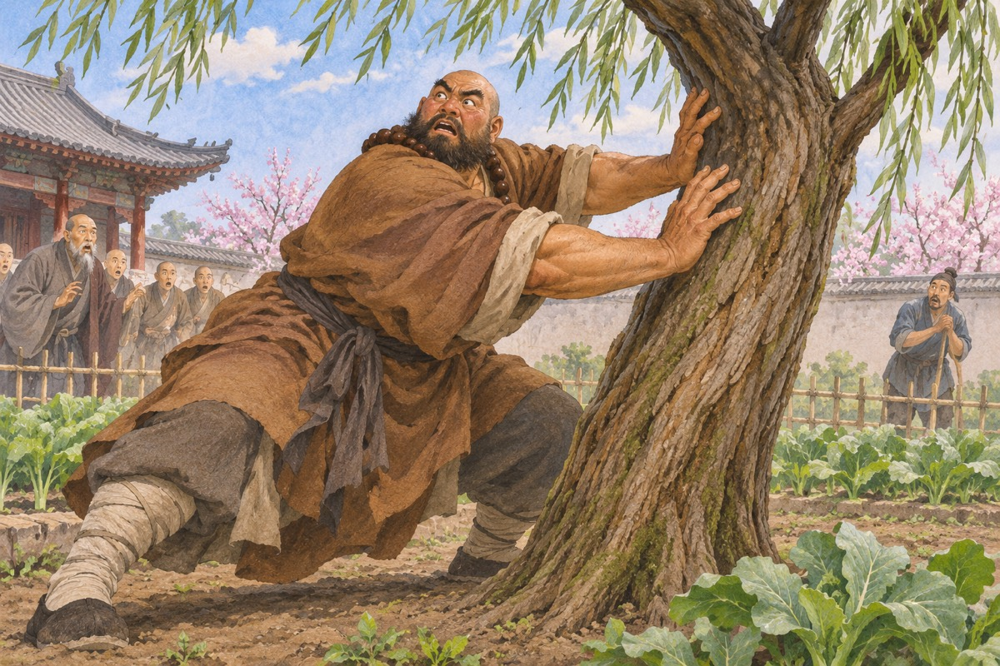
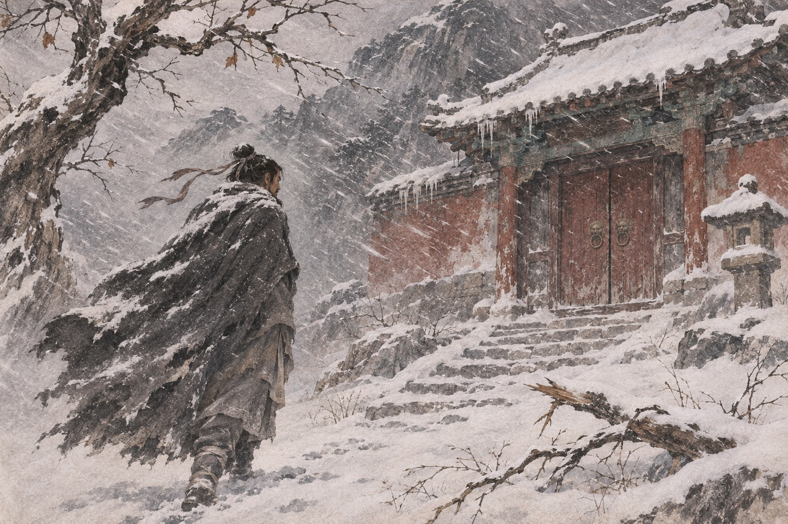
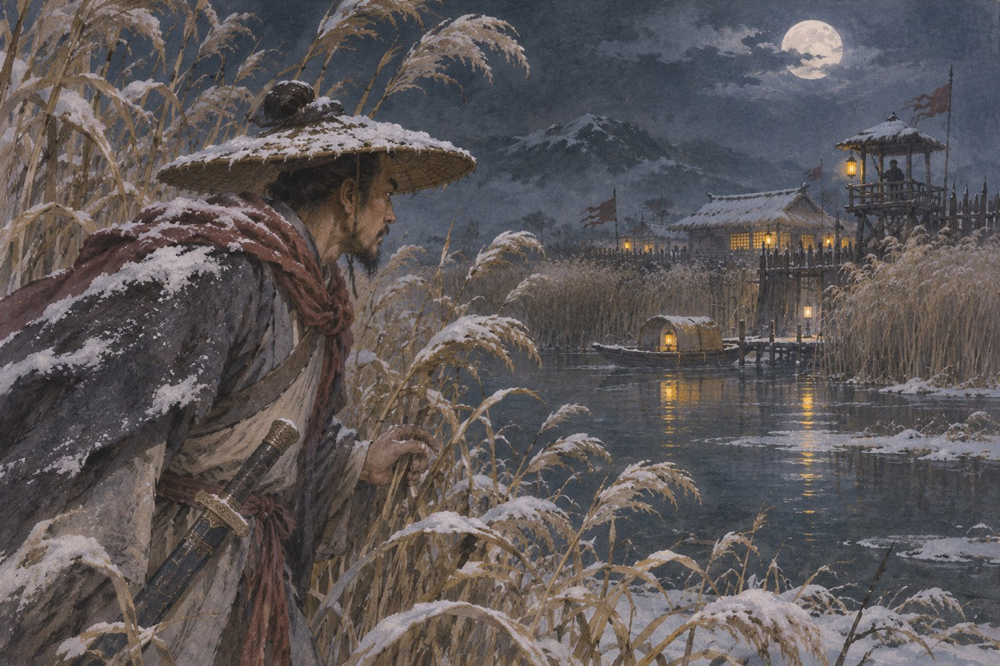
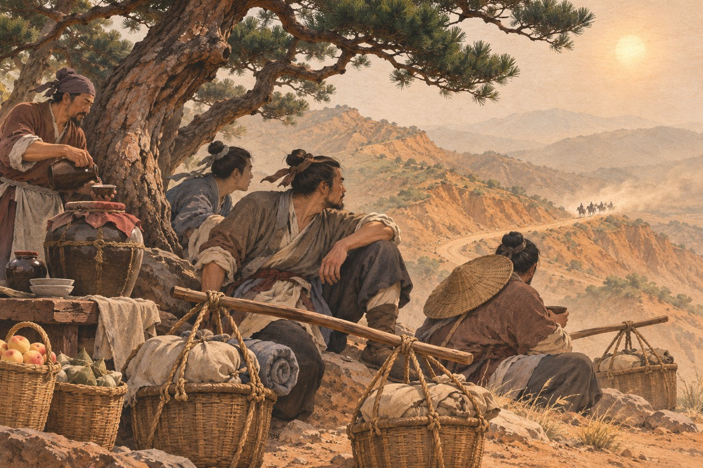
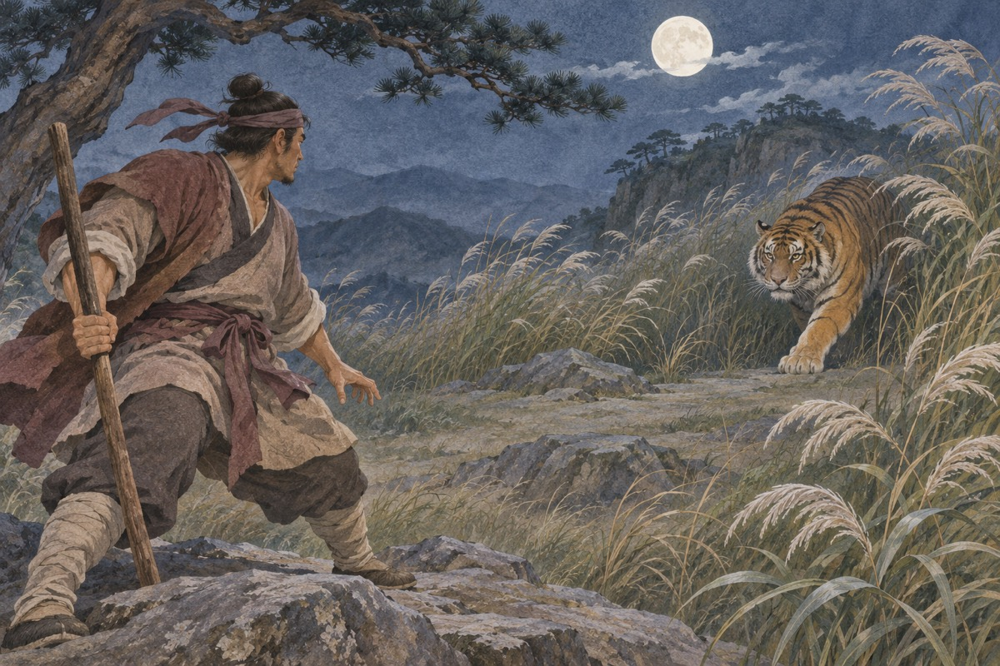
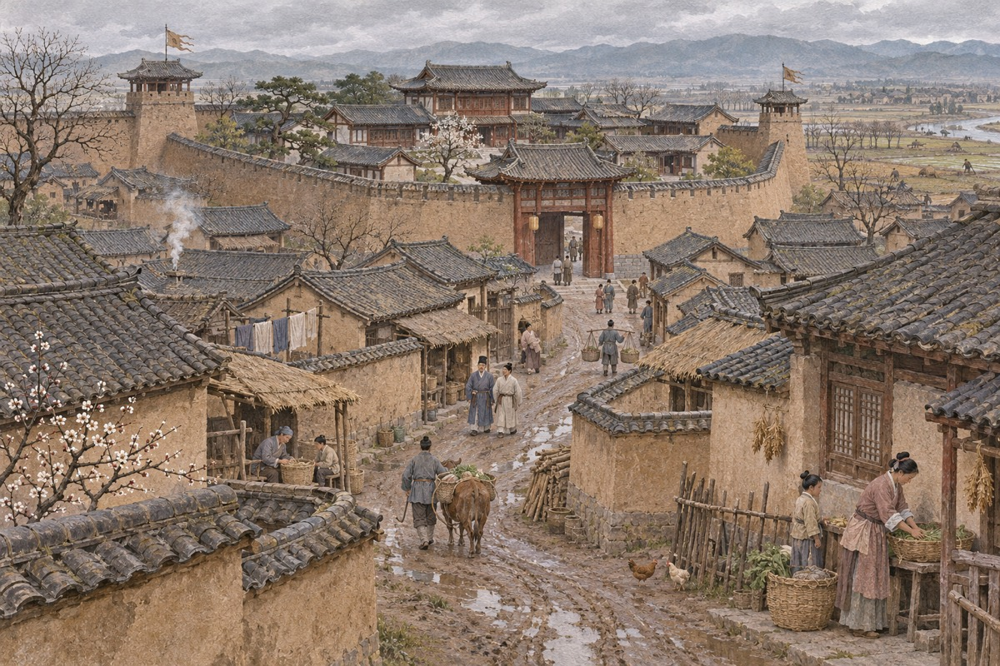
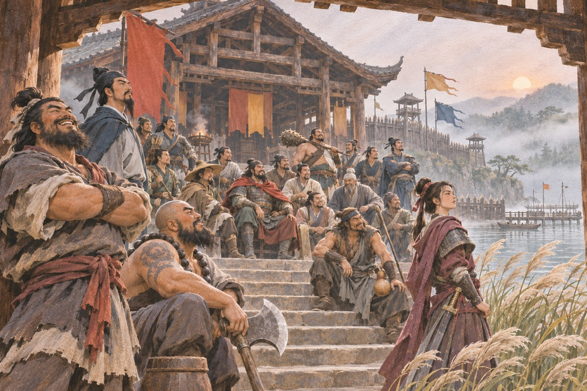
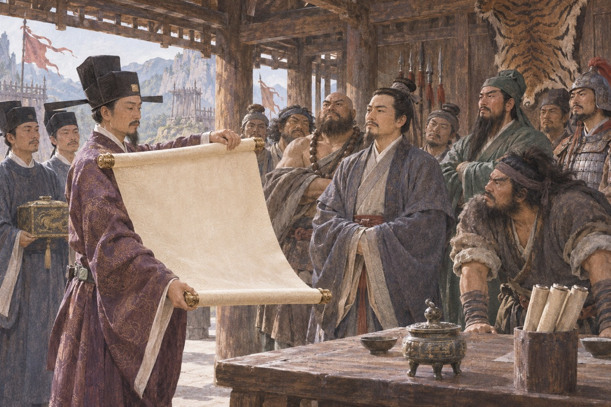
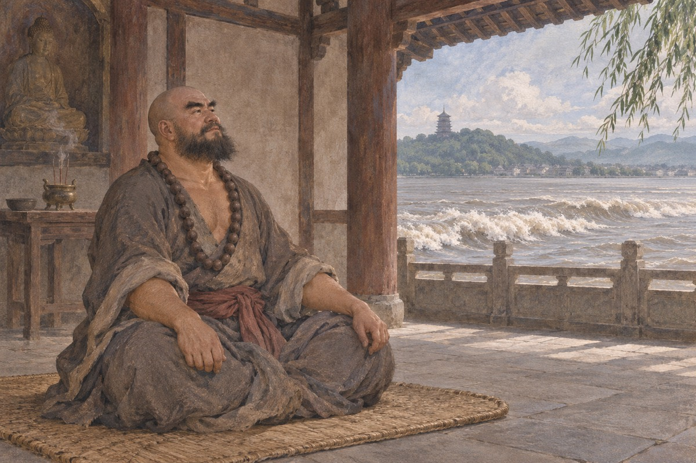

误走妖魔
仁宗嘉祐三年，天下瘟疫流行，军民死者大半。朝廷派殿前太尉洪信去龙虎山请张天师祈禳。洪信上了山，天师没见到，倒看见一座伏魔殿，门上贴着十几道封皮，锁上灌了铁汁。道士说：这里边关着三十六天罡、七十二地煞，一放出来，天下大乱。洪信不信，让人砸开锁，推开殿门。殿里一块石碑，底下压着一团黑气。石碑一倒，黑气冲上天空，散作百十道金光，往四面八方去了。洪信吓得两腿发软。这一百零八道金光，就是后来梁山的一百零八个人。
高俅发迹
高俅原是东京城里的破落户，排行第二，踢得一脚好球，人称高毬。他因带坏王员外的儿子，被开封府断了四十脊杖。后来他投到驸马王诜府里当亲随，一次送玉器到端王府，正赶上端王踢球，球滚到他脚下，他一个“鸳鸯拐”踢回去，端王大喜，把他要了过来。不久端王即位，就是徽宗。高俅半年之内做到殿帅府太尉。上任第一天点卯，八十万禁军教头王进因病未到，高俅要打他。王进抬头一看，那太尉竟是当年街头的泼皮高二，回家收拾行李，带着老母连夜逃了。
拳打镇关西
鲁达是渭州经略府的提辖，生得面圆耳大、鼻直口方，一部络腮胡子。那天他和史进、李忠在潘家酒楼喝酒，隔壁有人哭。问下来，是金翠莲父女：被屠户郑屠强占为妾，写了三千贯的虚钱实契，不到三个月被赶出来，郑屠反要她赔钱。鲁达当场给了十五两银子，让他们明日就走。第二天一早，他先送走金氏父女，然后到状元桥下找到郑屠，先要十斤精肉切臊子，再要十斤肥肉切臊子，最后要十斤软骨也切臊子。郑屠火了：你这是消遣我！鲁达把两包臊子劈面打过去，三拳——一拳打在鼻子上，一拳打在眼眶上，一拳打在太阳穴上——郑屠不动了。
倒拔垂杨柳
鲁达打死郑屠，逃到代州雁门县，遇见金老，被引到五台山出家，法名智深。他喝酒吃肉，醉打山门，被长老打发到东京大相国寺。寺里让他去看菜园。菜园附近有一群泼皮，常来偷菜，听说换了新人，商量着要给他一个下马威：假装来贺喜，把他掀进粪坑。鲁智深将计就计，反把两个领头的踢进粪坑。第二天泼皮们凑钱赔罪，请他在树下喝酒。乌鸦在树上叫，吵得烦，有人说要搬梯子拆巢。鲁智深走过去，两手抱住树干，一使劲，把一棵碗口粗的柳树连根拔了起来。泼皮们跪了一地。

误入白虎堂
林冲是东京八十万禁军枪棒教头，生得豹头环眼、燕颔虎须，人称豹子头。他的妻子张氏去岳庙上香，被高俅的干儿子高衙内拦住调戏。林冲赶到，拳头举起来又放下——那是顶头上司的儿子。高衙内回去害了相思病，帮闲的富安出了个主意：让陆谦把林冲骗出去喝酒，再把张氏骗到陆谦家里。林冲及时赶到，砸了陆家。高俅见儿子病重，设下毒计：让人拿一把宝刀卖给林冲，再以“看刀”为名，把他骗进商议军机的白虎堂。林冲带刀进了白虎堂，高俅喝令拿下，诬他行刺。刺配沧州，脸上刺了金印。
野猪林
押解林冲的是董超、薛霸。高俅给了他们十两金子，要他们在路上结果林冲。两人一路折磨他，用开水烫他的脚，给他穿新草鞋，把脚磨得血肉模糊。到了野猪林，两人说要歇息，把林冲绑在树上，举起水火棍就要下手。林冲闭眼等死。一根禅杖飞过来，把水火棍打落，鲁智深从树后跳出来，要杀两个公差。林冲拦住：不干他们事，是高俅的命令。鲁智深一路护送他到沧州，临走前打断一棵松树，说：你们两个，再敢动他，这棵树就是样子。
风雪山神庙
林冲到沧州后，被派去看管草料场。那天下着大雪，他挑了酒葫芦去沽酒，回来时草厅被雪压塌了。他搬到山神庙里过夜，把门用石头抵住。半夜听见门外有脚步声，接着是噼啪的火声。他凑到门缝看：草料场烧起来了，火光里有三个人——陆谦、富安、差拨。陆谦说：烧死他，捡两块骨头回去交差。林冲推开门，一枪刺倒差拨，一刀杀了富安，把陆谦踏在雪地里，取出心肝，提在手里。他冒着大雪走了，这一夜之后，世上再没有林教头。

雪夜上梁山
林冲杀了人，官府四处缉拿，柴进写信荐他上梁山。梁山泊的寨主王伦是个落第秀才，心胸狭窄，怕林冲武艺高强夺了他的位子，拿出一锭银子要他另投别处。杜迁、宋万劝，他才改口：要入伙，得交投名状——下山杀一个人。林冲在山下等了两天，第三天遇见一个挑担的汉子，两人打了三十回合不分胜负。那人是杨志，杨家将后人，丢了花石纲，正要去东京谋复职。王伦见杨志武艺好，想留他制衡林冲，杨志不肯。林冲留下了，但王伦的猜忌，他记在心里。

杨志卖刀
杨志是杨家将的嫡派子孙，做到殿司制使，奉命押送花石纲，在黄河里翻了船，丢了官。他凑了一担钱物回东京打点，被高俅赶了出来。钱花光了，他只好到街上卖祖传的宝刀。那刀插在草标上，无人问津。泼皮牛二来了，抓起刀看了又看，说：你这刀有什么好？杨志说：第一，砍铜剁铁，刀口不卷；第二，吹毛得过；第三，杀人刀上没血。牛二不信，把头伸过来：你杀我试试。杨志一刀把他杀了。
智取生辰纲
大名府留守梁中书是蔡京的女婿，每年要送十万贯金珠宝贝给岳父贺寿，这就是生辰纲。今年他派杨志押送，杨志要求众人扮作客商，走小路，白天休息，晚上赶路。晁盖在東溪村得知消息，吴用说：我有一条计。他先去石碣村说服阮氏三雄，又拉上公孙胜、刘唐、白胜。七个人在黄泥冈设下埋伏：白胜挑着两桶酒，先卖一桶给枣贩子喝，另一桶也喝了半瓢，其实瓢里下了蒙汗药。杨志一行人渴得受不了，买来喝了，一个个倒在地上。十万贯金珠，就这么被劫走了。

火并王伦
劫了生辰纲，官府追查，晁盖等人只好上梁山。王伦还是那副样子，摆酒接风，话里话外要他们另投。吴用看出林冲心里有火，就用话激他：林教头是条好汉，可惜屈居人下。林冲当晚去找王伦，王伦还在推托，林冲一把揪住他：你这落第穷儒，也配做寨主？一刀杀了。他提着王伦的头，把晁盖请上第一把交椅。梁山从此换了气象，从几十人的小寨，变成能容天下好汉的地方。
宋江杀惜
宋江是郓城县的押司，人称及时雨。他给劫了生辰纲的晁盖通风报信，晁盖派刘唐送来一百两黄金和一封书信。宋江只收了一条金子，信塞在招文袋里。他的外室阎婆惜发现了信，要挟他给一百两金子，否则告官。宋江翻遍全身也凑不出，阎婆惜说：那你把信给我。宋江去抢，两人扭打，他一时性起，一刀杀了她。此后刺配江州。在浔阳楼喝酒，他想起自己三十多岁还是一事无成，提笔在墙上写了一首《西江月》，又写了四句诗，最后一句是：他时若遂凌云志，敢笑黄巢不丈夫。
武松打虎
武松在柴进庄上躲了一年，听说家里没事，回清河县找哥哥。路过阳谷县景阳冈，看见酒旗上写着“三碗不过冈”。他不信邪，一口气喝了十八碗。店家说冈上有虎，已伤了二三十条人命，劝他住下。武松提着哨棒上了冈，走到半山，酒劲上来，找了块大青石躺下。一阵风过，跳出一只吊睛白额虎。武松一闪，哨棒打在树上断了。他扔掉半截棒，骑上虎背，一手揪住顶花皮，一手只顾打。打了五七十拳，老虎眼里、嘴里、鼻子里都流出血来。

杀嫂
武松在阳谷县做了都头，与哥哥武大相认。武大娶了潘金莲，潘金莲嫌他矮丑，与西门庆勾搭。王婆从中撮合，三人合谋，用砒霜毒死武大。武松出差回来，见哥哥已死，起了疑心。他查访到何九叔藏的骨殖和郓哥的证词，带着人证物证去县衙告状，县官收了西门庆的钱，不准。武松就在家中设了灵堂，请来邻居，当着众人的面审潘金莲。潘金莲招了，他一刀杀了她，又到狮子楼斗杀西门庆，把两颗头供在灵前。
醉打蒋门神
武松刺配孟州，路上经过十字坡，遇见孙二娘开黑店。他识破酒里有药，假装喝下，等孙二娘来搬他时，一把将她按住。张青赶回来赔罪，三人结为兄弟。到了孟州，管营的儿子施恩好酒好肉招待他。施恩在快活林开酒店，被蒋门神夺了。武松说：我替你夺回来。他一路喝了三十多碗酒，醉醺醺地走到快活林，先把蒋门神的妾丢进酒缸，又把蒋门神打得跪地求饶，把酒店还给了施恩。
血溅鸳鸯楼
蒋门神不甘心，勾结张都监设局。张都监把武松请到府里做亲随，又把丫鬟玉兰许给他。中秋夜，张都监喊捉贼，从武松房里搜出赃物，把他下在死牢。施恩上下打点，才改判刺配恩州。路上蒋门神的两个徒弟要杀他，武松在飞云浦挣开枷锁，杀了四人。他提着刀回到孟州，进了张都监的鸳鸯楼，从楼下杀到楼上，张都监、蒋门神、张团练，连同夫人、丫鬟、仆人，一共十五口，全杀了。他在墙上蘸血写了八个字：杀人者，打虎武松也。
劫法场
宋江在浔阳楼题了反诗，被黄文炳告发。蔡九知府判他斩刑。行刑那天，江州法场围满了人。午时三刻，刽子手举起刀，东边一伙人喊：梁山泊好汉全伙在此！李逵从酒楼上跳下来，两把板斧，见人就砍，一路砍到法场中心，背起宋江就走。戴宗也被救出。众人退到白龙庙，李俊、张顺等人驾船接应。二十九条好汉在白龙庙聚义，然后一同上了梁山。
李逵接母
李逵上梁山后，想起家里的老母，请假回去接。他到家时，母亲已瞎了眼，靠给人帮工过活。李逵背起母亲就走，走到沂岭，母亲说口渴，他去寻水。回来时看见一地血迹，母亲只剩一条腿——被老虎吃了。李逵大怒，提着朴刀找虎，先杀了两只小虎，又杀了母虎和公虎。四只虎杀完，他坐在石头上大哭。后来他把母亲的骨殖埋了，一个人回梁山。
三打祝家庄
祝家庄在独龙冈，庄主祝朝奉有三个儿子，教师栾廷玉武艺高强。庄上与梁山结怨，宋江带兵去打。第一次去，因为不识路径，中了埋伏，杨林、黄信被擒。第二次去，扈三娘来救，连擒王英、秦明。第三次，孙立带着登州人马投奔祝家庄，说是来助战。孙立是栾廷玉的师弟，祝家信了。他在庄内做内应，放火为号，梁山内外夹攻，破了祝家庄。李逵杀得性起，把扈家庄一门老小也砍了，只跑了扈成。

大破连环马
呼延灼率连环马征梁山。三千匹马，马带马甲，人披铁铠，用铁环连成一片，刀枪不入，箭射不透。梁山连败几阵。汤隆说：我表哥徐宁会使钩镰枪，专破连环马。吴用派时迁去东京，盗了徐宁的祖传雁翎甲。徐宁追甲追到梁山，被留了下来。他教了三个月，教出五百钩镰枪手。再战时，梁山军把连环马引到芦苇丛中，钩镰枪专钩马腿，一匹马倒，一排马都倒。呼延灼落水被擒。
关胜征梁山
朝廷再派蒲东巡检关胜征梁山。关胜是关羽的嫡派子孙，使一口青龙偃月刀，带宣赞、郝思文，用“围魏救赵”之计直取梁山泊。宋江回师救援，阵前看见关胜，赞叹不已。吴用用反间计，让呼延灼诈降，把关胜诱入埋伏，用挠钩拖下马。宋江亲解其缚，关胜说：败军之将，何敢言勇。宋江说：将军若肯同替天行道，宋江愿让位。关胜归顺。
柴进陷高唐州
柴进的叔叔柴皇城在高唐州被知府高廉的妻舅殷天锡欺压，要夺他的宅院。柴进去理论，李逵跟去，一怒之下打死了殷天锡。高廉把柴进抓进大牢，严刑拷打。梁山发兵攻打高唐州，高廉会妖法，呼风唤雨，飞沙走石，梁山军连败。戴宗去蓟州请来公孙胜，公孙胜用五雷天罡正法破了高廉的妖术，攻破高唐州，救出柴进。
三山聚义打青州
鲁智深、杨志、武松在二龙山，史进在少华山，李忠、周通在桃花山，三山原本各不相干。孔明、孔亮来求援，说叔叔孔宾被青州知府慕容彦达抓了。三山合兵攻打青州，呼延灼正好在青州，用连环马把三山打得大败。鲁智深去请梁山，宋江带兵来援，设计擒了呼延灼。三山人马一同上梁山，这是梁山第一次真正意义上的“合众”。
晁盖之死
晁盖听说曾头市抢了梁山的马，还编了童谣骂梁山，大怒，亲自带兵去打。到了曾头市，对方闭门不出。两个和尚来诈降，说知道小路。晁盖信了，连夜进兵，走到法华寺，伏兵四起。一支箭射中他的面颊，箭上刻着“史文恭”三个字。晁盖被救回梁山，箭疮发作，临终前说：谁能捉住射我的人，就做梁山之主。宋江守在榻前哭，晁盖死后，他暂代寨主。
活捉史文恭
晁盖死后，宋江要为他报仇。曾头市有史文恭，武艺高强，梁山几次攻打都失利。吴用设伏，把史文恭诱出，卢俊义一朴刀把他打落马下，活捉回营。宋江在晁盖灵前把史文恭剖腹剜心，祭了晁盖。按晁盖的遗言，捉住史文恭的人该做寨主，卢俊义推辞，众人也不服，最后仍由宋江坐第一把交椅，卢俊义坐第二。
卢俊义上山
宋江想请卢俊义上山，说他“棍棒天下无双”，能壮梁山声势。吴用扮成算命先生，到卢俊义家给他算了一卦，说他百日之内有血光之灾，要往东南方一千里外躲避。又在他家墙上题了一首藏头诗，暗含“卢俊义反”。卢俊义信了，带着燕青出门，路过梁山被擒。宋江留他住了两个月，放他回去。到家才发现妻子贾氏已与管家李固通奸，告他落草为寇。卢俊义下狱，梁山攻破大名府救出他。他上山坐了第二把交椅。
一百单八将
梁山聚齐一百零八人。宋江要排座次，怕众人不服，就说天降石碣。吴用让人把石碣埋好，再挖出来，上面刻着三十六天罡、七十二地煞的姓名和座次。众人看了，都说是天意。宋江排了座次，改聚义厅为忠义堂，竖起“替天行道”的大旗。这一天梁山泊旌旗蔽日，一百零八人歃血为盟。也是从这一天起，这支队伍不再只是活不下去的人，而是一支有名字、有秩序、有野心的军队。座次如下：天罡三十六——宋江、卢俊义、吴用、公孙胜、关胜、林冲、秦明、呼延灼、花荣、柴进、李应、朱仝、鲁智深、武松、董平、张清、杨志、徐宁、索超、戴宗、刘唐、李逵、史进、穆弘、雷横、李俊、阮小二、张横、阮小五、张顺、阮小七、杨雄、石秀、解珍、解宝、燕青；地煞七十二——朱武、黄信、孙立、宣赞、郝思文、韩滔、彭玘、单廷圭、魏定国、萧让、裴宣、欧鹏、邓飞、燕顺、杨林、凌振、蒋敬、吕方、郭盛、安道全、皇甫端、王英、扈三娘、鲍旭、樊瑞、孔明、孔亮、项充、李衮、金大坚、马麟、童威、童猛、孟康、侯健、陈达、杨春、郑天寿、陶宗旺、宋清、乐和、龚旺、丁得孙、穆春、曹正、宋万、杜迁、薛永、施恩、李忠、周通、汤隆、杜兴、邹渊、邹润、朱贵、朱富、蔡福、蔡庆、李立、李云、焦挺、石勇、孙新、顾大嫂、张青、孙二娘、王定六、郁保四、白胜、时迁、段景住。

招安
宋江一直想招安。他两次击败童贯，三次击败高俅，却把高俅放回去，只求他在皇帝面前说好话。他又走宿元景的门路，送金银，求他在徽宗面前进言。第一次招安，诏书里写着“除宋江、卢俊义等”，众人不服，李逵扯了诏书。第二次，宋江花重金买通陈太尉，诏书终于下来。梁山好汉跪在泥地里接旨，李逵躲在人群后面，不肯跪。

征辽
招安之后，梁山人马被派去征辽。一百零八将出征，无一阵亡。他们连破檀州、蓟州、霸州、幽州，最后在幽州城外摆下九宫八卦阵，大败辽国十万大军。辽国求和，梁山班师。这是他们最后一次整整齐齐地一起打仗，也是最后一次所有人都还在。回京之后，朝廷对他们依旧冷淡，不给官职，只给了一些赏赐。
征田虎
招安之后第一仗是征辽，第二仗是征田虎。田虎在河北称王，帐下有乔道清会道术，还有一个会使飞石的姑娘叫琼英。宋江的人打了几仗，损了好几个头领。最后是张清把琼英娶了过来，琼英反手帮他们破了田虎的营。田虎被擒，押回东京。这一仗打完，梁山的人少了十几个。
出处 · 120 回本第 91—95 回 征田虎
征王庆
第三仗是征王庆。王庆在淮西造反，占了八州，手底下有段三娘这样的悍将。宋江的人一路打过去，打到最后，王庆被围在城里，自己人先乱了。这一仗又少了几个。宋江在军帐里点数，点完不说话。吴用说：哥哥，还剩一半。他说：我知道。
出处 · 120 回本第 101—105 回 征王庆
征方腊
征方腊是梁山最惨的一战。江南水网密布，方腊的将领熟悉地形，又用诈降、埋伏、瘟疫。一百零八人出征，七十二人阵亡，八人病死，十余人离散。张顺在涌金门被乱箭射死，阮小二在乌龙岭自刎，解珍解宝坠崖，秦明被方杰所杀。鲁智深擒了方腊，算是给这场战争画了个句号。回京时只剩二十七人，宋江在马上回头，看不见几个熟面孔了。
出处 · 120 回本第 111—119 回 征方腊
张顺之死
张顺想立功。杭州城三面是水，只有涌金门一处可以潜入。他脱了衣服，口衔尖刀，从水门游进去。守军发现水响，往水里射箭。张顺身中数十箭，死在水里。宋江夜里梦见张顺，浑身是血，说：哥哥，我死了。宋江惊醒，派人去打捞，捞上来时，他身上还插着箭。后来张顺的魂魄在西湖显灵，被百姓立了庙。
武松断臂
征方腊时，武松被包道乙的飞刀砍中左臂，刀上有毒。他躺在地上，看见自己的手臂已经黑了，就对宋江说：哥哥，我这胳膊保不住了。他拿起戒刀，自己把左臂割了下来，血流了一地。他单臂擒住方腊，立了大功。班师时他不肯回京，留在六和寺出家，被朝廷封为清忠祖师，活到八十岁。
鲁智深坐化
鲁智深随军到了杭州，住在六和寺。半夜听见江上隆隆作响，他以为是战鼓，抄起禅杖就要冲出去。僧人拦住他，说：这是钱塘江的潮信，不是战鼓。鲁智深一愣，想起师父智真长老给他的四句偈：遇林而起，遇山而富，遇水而兴，遇江而止。他问：什么叫潮信？僧人说：潮水按时而来，从不失信，所以叫潮信。鲁智深大笑：今日方知我是我。他洗了澡，换了衣服，坐在蒲团上，合掌而逝。

林冲风瘫
林冲在征方腊时染了风瘫，半身不遂，留在六和寺养病。武松正好也在这里出家，就留下来照顾他。林冲躺在床上，常常望着窗外，不说话。他这一生，从东京到沧州，从梁山到江南，走了几千里，最后还是没能回东京，也没能亲手杀了高俅。半年后他病逝，葬在六和寺旁。武松为他守了三年墓。
宋江饮鸩
宋江征方腊回来，被封为楚州安抚使。高俅、蔡京、杨戬、童贯怕他复起，在御酒里下了慢药。宋江喝下后，觉得腹中疼痛，知道中了毒。他说：我死之后，恐怕李逵造反，坏了梁山“忠义”的名声。于是派人把李逵从润州叫来，也让他喝了毒酒。李逵喝完，说：哥哥，反了吧。宋江说：兄弟，来不及了。
李逵之死
李逵喝下毒酒，回到润州，几天后毒发。他躺在床上，肚子疼得打滚，知道自己活不成了。他对宋江派来的人说：罢了，罢了，生时服侍哥哥，死了也只是哥哥部下一个小鬼。他死后，与宋江一同葬在楚州南门外的蓼儿洼。坟前立了一块碑，上面写着“宋江之墓”，旁边一行小字：李逵附葬。
吴用花荣自缢
吴用和花荣到楚州上任，听说宋江已死，赶到蓼儿洼。两人在墓前哭了半夜。吴用说：哥哥死了，我们还有什么脸活着。花荣说：我跟你一起。两人在墓旁的树上自缢。第二天被人发现时，两具尸体还挂着，风吹过来，衣角轻轻晃。梁山的两个聪明人——一个算尽天下，一个箭无虚发——用最不聪明的方式，结束了。
徽宗梦游梁山
宋江死后，徽宗在宫中做了一个梦。梦见宋江、卢俊义等人跪在阶下，浑身是血，诉说冤屈。皇帝惊醒，问左右，才知道梁山好汉已经死尽。他下旨为宋江立庙，塑像祭祀。庙成那天，百姓来了很多。有人在庙前烧纸，说：你们替天行道，天没替你们做主。这句话被风吹散了，没有人接。